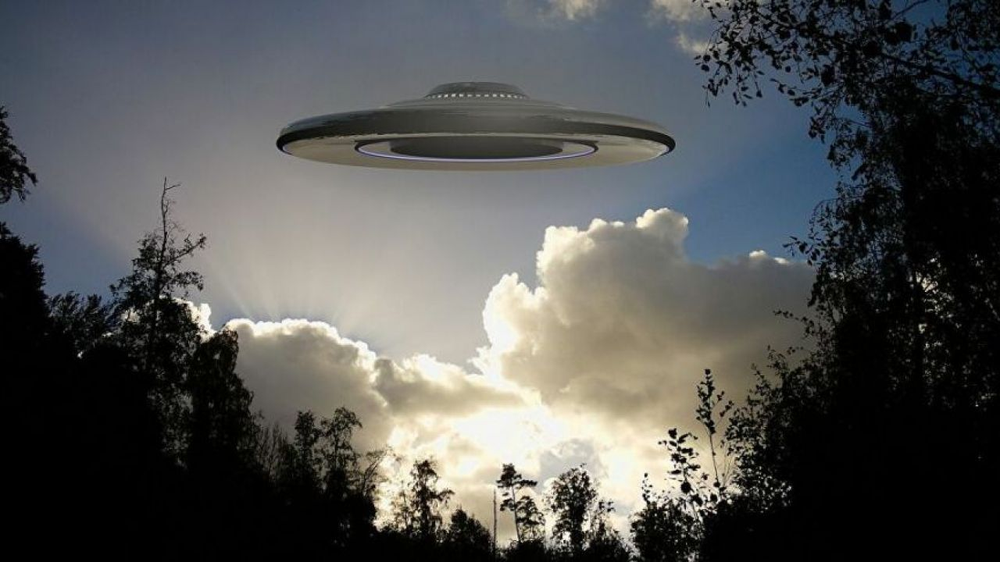
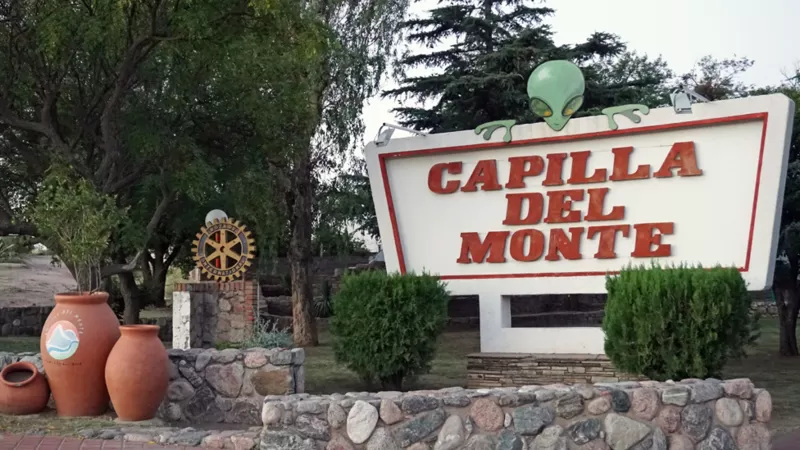
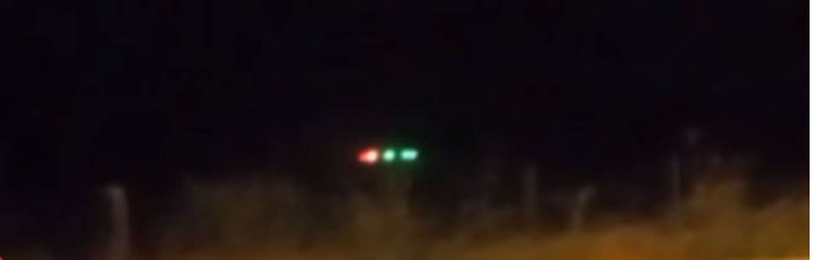

El hombre que investiga ovnis en Argentina
Rubén Lianza llevaba siete años retirado de la Fuerza Aérea argentina cuando fue llamado, o "reconvocado", como él lo cuenta, para una misión especial.
Por su experiencia como investigador de objetos voladores identificados y no identificados, le pidieron que asumiera el control de la Comisión de Estudio de Fenómenos Aeroespaciales de Argentina (CEFAE).
La agencia llevaba abierta desde 2011, pero sus predecesores se habían retirado del cargo y necesitaban que alguien se hiciera cargo.
Argentina también tiene archivos de OVNIs desclasificados

Qué revelan los documentos que en el 2020 publicó el Gobierno objetos no identificados. El caso del vuelo de Aerolíneas a Bariloche.
Hace algunos meses, el sitio especializado Black Vault obtuvo, luego de numerosas peticiones, y gracias a la ley de libertad de información de EE.UU., la desclasificación de todo el material recopilado por la CIA y la NASA referido al fenómeno OVNI.
Capilla del Monte, el pueblo de Argentina obsesionado con los extraterrestres donde "todo el mundo ha visto un ovni alguna vez en su vida"

La emoción de Alicia Pagez, una residente de Capilla del Monte, en la provincia de Córdoba, en el centro de Argentina, va aumentando a medida que le llegan las fotos de la noche anterior, cuando estuvo en la sierra buscando objetos voladores no identificados (ovnis).
¿Un OVNI en el cielo jujeño?: un enigma resuelto.

Un video registrado por una familia aterrorizada muestra un extraño objeto volador con luces sobre un campo de la provincia de Jujuy. El administrador de la finca que sobrevolaba la nave misteriosa develó el misterio.
Se la escucha gritar "Ay, está en el aire. ¿Cuál es? ¡No tiene ruedas, no tiene patas! ¿Es un helicóptero? Trata de tranquilizarse, mientras el objeto con luces verdes y rojas se desplaza suspendido...